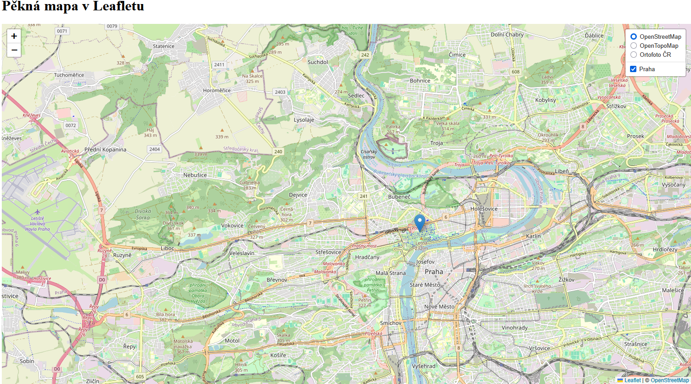
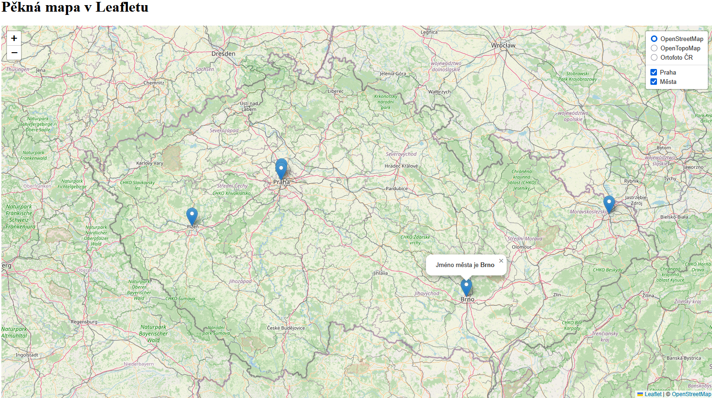
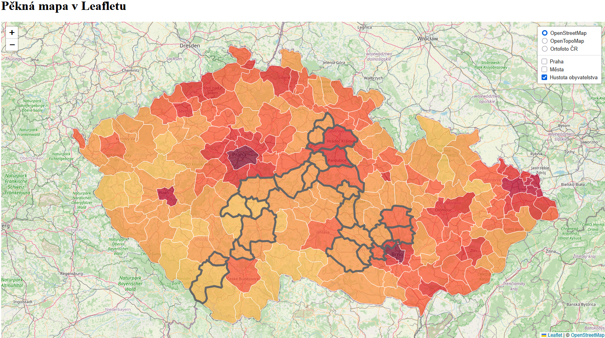
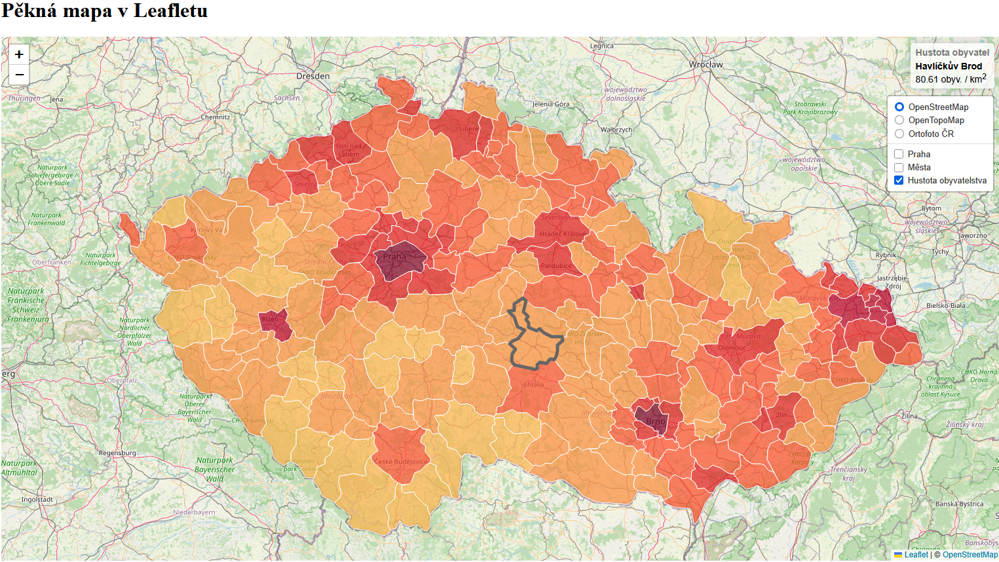

GeoJSON (Geographic JavaScript Object Notation) je otevřený formát pro ukládání a výměnu geografických dat. Tento formát je navržený tak, aby reprezentoval geografické prvky s jejich neprostorovými atributy.
Je založený na standardu JSON (JavaScript Object Notation), což ho činí čitelným pro lidi i stroje a snadno zpracovatelným v různých programovacích jazycích.
Struktura formátu GeoJSON
type – specifikace typu objektu geometrie nebo kolekce souřadnic (FeatureCollection)
geometry – určení prostoroví reprezentace dat (např. bod, linie, polygon)
properties – atributy nebo metadata vztahující se k dané geometrii
coordinates – zeměpisné souřadnice bodu či lomových bodů ([zeměpisná délka (longitude), šířka (latitude), nadmořská výška])
TopoJSON je nadstavba GeoJSON, která se liší tím, že neukládá opakující se informace o topologii sousedních prvků, což vede k menší velikosti souboru a efektivnější práci s geoprostorovými daty.
Například společná hranice dvou států (Česka a Německa) se uloží pouze jednou. V GeoJSONu by se tato hranice uložila dvakrát (jednou pro polygon Česka, podruhé pro polygon Německa). Je tím pádem vhodný pro využití u větších datových sad či při nutnosti zachování topologie.
Datová struktura je naopak v porovnání s GeoJSONem složitější.
Toto cvičení navazuje na závěr předchozího cvičení. Začínáme tedy s kódem z minulé hodiny, který je vypsán v nabídce níže. Kód se však bude výrazně měnit, takže doporučujeme vytvořit kopii dat z minulé hodiny do nové složky, ve které budete pracovat. Takto si zachováte postup z obou hodin uložený.
Stav kódu na začátku cvičení
<!DOCTYPE html><html><head><metacharset="UTF-8"><metaname="viewport"content="width=device-width, initial-scale=1.0"><linkrel="stylesheet"href="style.css"><!-- Externí připojení CSS symbologie Leaflet--><linkrel="stylesheet"href="https://unpkg.com/leaflet@1.9.4/dist/leaflet.css"integrity="sha256-p4NxAoJBhIIN+hmNHrzRCf9tD/miZyoHS5obTRR9BMY="crossorigin=""/><!-- Externí připojení JS knihovny -> vložit až po připojení CSS souboru --><scriptsrc="https://unpkg.com/leaflet@1.9.4/dist/leaflet.js"integrity="sha256-20nQCchB9co0qIjJZRGuk2/Z9VM+kNiyxNV1lvTlZBo="crossorigin=""></script><title>Moje první Leaflet mapa</title></head><body><h1>Pěkná mapa v Leafletu</h1><divid="map"></div><scriptsrc="script.js"></script></body></html>
/* Velikost mapového okna */#map{height:800px;width:60%;}
1) Načtení bodu z GeoJSON do mapové aplikace
Nejprve načteme GeoJSON přímo v kódu jako proměnnou. Na platformě geojson.io vytvoříme jeden bod, například na pozici Prahy. K tomu využijeme první tlačítko z pravé postranní nabídky v mapě. Vygenerovaný kód v pravé části obrazovky si zkopírujeme.
V javascript kódu vytvoříme proměnnou, do které vložíme zkopírovaný kód z GeoJSON.
// Načtení bodu z GeoJSON zápisuvarprahaBod=[// Sem vložíme kód z GeoJSON];
Po vložení bodu:
// Načtení bodu z GeoJSON zápisuvarprahaBod=[{"type":"FeatureCollection","features":[{"type":"Feature","properties":{},"geometry":{"coordinates":[14.41581389404206,50.0970543797564],"type":"Point"}}]}];
V další fázi je třeba přidat načtení souboru z GeoJSONu do vrstvy prahaBodLayer.
// Přiřazení GeoJSONu do mapové vrstvy a její přidání do mapyvarprahaBodLayer=L.geoJSON(prahaBod).addTo(map);
Před pokračováním na další kroky mapovou aplikaci pročistíme a smažeme či zakomentářujeme všechny ostatní mapové vrstvy markersLayer, markerDivokaS, line a polygon.
Mapová aplikace po pročištění kódu a načtení bodu z GeoJSON
Stav kódu po dokončení kroku 1) Načtení bodu z GeoJSON do mapové aplikace
<!DOCTYPE html><html><head><metacharset="UTF-8"><metaname="viewport"content="width=device-width, initial-scale=1.0"><linkrel="stylesheet"href="style.css"><!-- Externí připojení CSS symbologie Leaflet--><linkrel="stylesheet"href="https://unpkg.com/leaflet@1.9.4/dist/leaflet.css"integrity="sha256-p4NxAoJBhIIN+hmNHrzRCf9tD/miZyoHS5obTRR9BMY="crossorigin=""/><!-- Externí připojení JS knihovny -> vložit až po připojení CSS souboru --><scriptsrc="https://unpkg.com/leaflet@1.9.4/dist/leaflet.js"integrity="sha256-20nQCchB9co0qIjJZRGuk2/Z9VM+kNiyxNV1lvTlZBo="crossorigin=""></script><title>Moje první Leaflet mapa</title></head><body><h1>Pěkná mapa v Leafletu</h1><divid="map"></div><scriptsrc="script.js"></script></body></html>
/* Velikost mapového okna */#map{height:800px;width:60%;}
2) Načtení externího souboru s daty
Na platformě geojson.io vytvoříme jednoduchou bodovou vrstvu s vybranými městy v Česku. Pro začátek stačí zvolit např. 4 body, přičemž každému bodu určíme hodnotu atributu nazev, do které zapíšeme název daného města. Soubor s daty stáhneme tlačítkem Save v levém horním rohu. Soubor přejmenujeme na mesta.geojson.
Takto stažený soubor je možné nahrát přímo do Leaflet, nicméně jednodušší možností je vytvoření nového js scriptu, např. mesta_GeoJSON.js, ve kterém vytvoříme proměnnou mesta a přiřadíme jí data ze staženého GeoJSONu. Nový soubor uložíme do stejné pracovní složky jako ostatní skripty.
Struktura připraveného souboru bude vypadat následovně:
varmesta={"type":"FeatureCollection","features":[{...// Zde jsou ostatní načtená data z GeoJSONu}]};
Abychom mohli města ze souboru mesta_GeoJSON.js načíst, je potřeba skript připojit v index.html – obdobně jako ostatní použité js soubory.
Do hlavičky v html tedy přidáme:
<!-- Načtení souboru s městy GeoJSON--><scriptsrc="mesta_GeoJSON.js"></script>
Nyní můžeme pokračovat načtením bodů z GeoJSONu do mapy. To provededeme podobně jako při načtení samostatného bodu Prahy v předchozím kroku. Zároveň přidáme novou vrstu měst do správce vrstev.
// Načtení GeoJSONu z proměnné "mesta" uložené v souboru "mesta_GeoJSON.js"varmestaLayer=L.geoJSON(mesta).addTo(map);// Proměnná uchovávající mapové vrstvy, které chceme zobrazovat a skrývatvaroverlayMaps={"Praha":prahaBodLayer,"Města":mestaLayer};
Závěrem tohoto kroku si upravíme rozsah úvodního okna pro celé Česko a upravíme zobrazení měst tak, abychom byli schopni zobrazit pop-up s jejich názvy.
// Nastavení mapy, jejího středu a úrovně přiblíženívarmap=L.map('map').setView([49.860,15.315],8);// Výběr bodu zhruba uprostřed republiky
Popup vytvoříme obdobně jako v minulé hodině, jen je k atributu potřeba přistupovat přes feature.properties.nazev.
Níže je vypsaný kód pro obyčejný pop-up vypisující pouze atribut (v komentáři) a upravený pop-up, který využívá html zápis. Pokud se odkazujeme přímo na hodnoty atributu, pak je nutné ve výpisu popupu využít zpětné uvozovky (backquote) ` (Alt + ý).
// Načtení GeoJSONu z proměnné "mesta" uložené v souboru "mesta_GeoJSON.js"varmestaLayer=L.geoJSON(mesta,{onEachFeature:function(feature,layer){if(feature.properties&&feature.properties.nazev){// layer.bindPopup(feature.properties.nazev); // Obyčejný popuplayer.bindPopup(`Jméno města je <b>${feature.properties.nazev}</b>`);// Vylepšený popup}}}).addTo(map);
Přidání pop-upu pro výpis hodnoty atributu "název"
Stav kódu po dokončení kroku 2) Načtení externího souboru s daty
<!DOCTYPE html><html><head><metacharset="UTF-8"><metaname="viewport"content="width=device-width, initial-scale=1.0"><linkrel="stylesheet"href="style.css"><!-- Načtení souboru s městy GeoJSON--><scriptsrc="mesta_GeoJSON.js"></script><!-- Externí připojení CSS symbologie Leaflet--><linkrel="stylesheet"href="https://unpkg.com/leaflet@1.9.4/dist/leaflet.css"integrity="sha256-p4NxAoJBhIIN+hmNHrzRCf9tD/miZyoHS5obTRR9BMY="crossorigin=""/><!-- Externí připojení JS knihovny -> vložit až po připojení CSS souboru --><scriptsrc="https://unpkg.com/leaflet@1.9.4/dist/leaflet.js"integrity="sha256-20nQCchB9co0qIjJZRGuk2/Z9VM+kNiyxNV1lvTlZBo="crossorigin=""></script><title>Moje první Leaflet mapa</title></head><body><h1>Pěkná mapa v Leafletu</h1><divid="map"></div><scriptsrc="script.js"></script></body></html>
Pro vytvoření kartogramu využijeme data obcí s rozšířenou působností (ORP) z datasetu ArcČR 4.3. Zde nalezneme řadu zajímavých statistických dat, která v následujících několika cvičeních vizualizujeme metodami tematické kartografie či infografikou.
1) Nejprve bude nutné protřídit atributy ve vrstvě ORP dle obrázku níže.
2) Dále polygony generalizujeme pro webové prostředí geoprocesingovou funkcí Smooth Shared Edges. Využijeme algoritmus PAEK a Smoothing Tolerance nastavíme na 1500 m.
3) Závěrem provedeme export do GeoJSONu pomocí funkce Features to JSON. Zaškrtneme Output to GeoJSON a Project to WGS_1984.
Vyexportovaný GeoJSON můžeme validovat (zkontrolovat) pomocí některého z webových nástrojů:
Nyní se dostaneme k načtení polygonů ORP s atributy. Je potřeba vytvořit nový js soubor, např. ORP_GeoJSON.js, ve kterém bude vložený GeoJSON s ORP, který jsme si dopředu připravili v GIS. Postup připojení bude velmi podobný jako v případě bodů měst. V podstatě vytvoříme novou proměnnou ORP, do které přiřadíme GeoJSON.
Struktura nového souboru bude následující:
varORP={"type":"FeatureCollection","features":[...// Zde jsou ostatní načtená data z GeoJSONu ]};
Připojení v hlavičce index.html:
<!-- Načtení souboru s ORP GeoJSON--><scriptsrc="ORP_GeoJSON.js"></script>
Provedeme jednoduché načtení polygonů ORP do aplikace. Načítání dat ORP musíme vypsat téměř až na konci skriptu. Tedy veškeré výpočetní či jiné funkce k němu vztažené vložíme v kódu před jeho načtení.
// Načtení GeoJSONu s polygony ORP do mapyvarORPLayer=L.geoJSON(ORP).addTo(map);
<!DOCTYPE html><html><head><metacharset="UTF-8"><metaname="viewport"content="width=device-width, initial-scale=1.0"><linkrel="stylesheet"href="style.css"><!-- Načtení souboru s městy GeoJSON--><scriptsrc="mesta_GeoJSON.js"></script><!-- Načtení souboru s ORP GeoJSON--><scriptsrc="ORP_GeoJSON.js"></script><!-- Externí připojení CSS symbologie Leaflet--><linkrel="stylesheet"href="https://unpkg.com/leaflet@1.9.4/dist/leaflet.css"integrity="sha256-p4NxAoJBhIIN+hmNHrzRCf9tD/miZyoHS5obTRR9BMY="crossorigin=""/><!-- Externí připojení JS knihovny -> vložit až po připojení CSS souboru --><scriptsrc="https://unpkg.com/leaflet@1.9.4/dist/leaflet.js"integrity="sha256-20nQCchB9co0qIjJZRGuk2/Z9VM+kNiyxNV1lvTlZBo="crossorigin=""></script><title>Moje první Leaflet mapa</title></head><body><h1>Pěkná mapa v Leafletu</h1><divid="map"></div><scriptsrc="script.js"></script></body></html>
/* Velikost mapového okna */#map{height:800px;width:60%;}
2) Základní statický kartogram
Pro vytvoření kartogramu je potřeba nejprve upravit načítání bodů z GeoJSONu.
// Načtení GeoJSONu s polygony ORP do mapyvarORPLayer=L.geoJSON(ORP,{style:kartogram,}).addTo(map);
Po přiřazení stylu kartogram do vrstvy ORPLayer bude potřeba vytvořit barvnou stupnici pro kartogram. Pro představu o rozsahu dat můžeme využít náhled v GISu.
Výpočet hodnoty zobrazovaného atributu přímo v JavaScriptu
Pokud máme z GISu připravený atribut pro vizualizaci, můžeme pokračovat s přípravou barevné stupnice níže. Nicméně, v této ukázce si ještě musíme dopočítat hustotu obyvatelstva v každém ORP.
// Výpočet nového atributu pro každý prvek ORP // (hustota obyvatelstva = počet obyvatel / plocha), převod z m2 na km2 -> vynásobení 1 000 000ORP.features.forEach(function(feature){if(feature.properties.Shape_Area&&feature.properties.poc_obyv_SLDB_2021){feature.properties.hustota=(feature.properties.poc_obyv_SLDB_2021/feature.properties.Shape_Area)*1000000}else{feature.properties.hustota=0}})
V tomto příkladu budeme pracovat s hustotou obyvatelstva v jednotlivých ORP, ale je možné použít jiný vhodný relativní atribut. Barevnou stupnici můžeme vytvořit pomocí nástroje ColorBrewer.
// Vytvoření barevné stupnicefunctiongetColor(d){returnd>1000?'#800026':d>500?'#BD0026':d>200?'#E31A1C':d>100?'#FC4E2A':d>50?'#FD8D3C':d>20?'#FEB24C':'#FFEDA0';// Výchozí barva}
Pro vytvoření statického kartogramu je nutné ještě definovat jeho styl, ve kterém určíme atribut, který chceme vizualizovat. Dále můžeme upravit styl vrstvy (průhlednost, ohraničení apod.).
// Styl kartogramufunctionkartogram(feature){return{fillColor:getColor(feature.properties.hustota),// Styl na základě atributu "hustota"weight:1,opacity:1,color:'white',fillOpacity:0.7};}
Závěrem pouze odstraníme vykreslování bodových vrstev při načtení mapy – ponecháme je pouze v seznamu vrstev (smazáním příslušných .addTo(map)). Do seznamu přidáme nově vytvořenou vrstvu kartogramu ORPLayer.
// Proměnná uchovávající mapové vrstvy, které chceme zobrazovat a skrývatvaroverlayMaps={"Praha":prahaBodLayer,"Města":mestaLayer,"Hustota obyvatelstva":ORPLayer};
Stav kódu po dokončení kroku 2) Základní statický kartogram
<!DOCTYPE html><html><head><metacharset="UTF-8"><metaname="viewport"content="width=device-width, initial-scale=1.0"><linkrel="stylesheet"href="style.css"><!-- Načtení souboru s městy GeoJSON--><scriptsrc="mesta_GeoJSON.js"></script><!-- Načtení souboru s ORP GeoJSON--><scriptsrc="ORP_GeoJSON.js"></script><!-- Externí připojení CSS symbologie Leaflet--><linkrel="stylesheet"href="https://unpkg.com/leaflet@1.9.4/dist/leaflet.css"integrity="sha256-p4NxAoJBhIIN+hmNHrzRCf9tD/miZyoHS5obTRR9BMY="crossorigin=""/><!-- Externí připojení JS knihovny -> vložit až po připojení CSS souboru --><scriptsrc="https://unpkg.com/leaflet@1.9.4/dist/leaflet.js"integrity="sha256-20nQCchB9co0qIjJZRGuk2/Z9VM+kNiyxNV1lvTlZBo="crossorigin=""></script><title>Moje první Leaflet mapa</title></head><body><h1>Pěkná mapa v Leafletu</h1><divid="map"></div><scriptsrc="script.js"></script></body></html>
/* Velikost mapového okna */#map{height:800px;width:60%;}
3) Interaktivní kartogram
Nyní statický kartogram upravíme tak, aby byl interaktivní, a tedy vhodný pro webovou mapovou aplikaci.
V první řadě nastavíme zvýraznění a výběr polygonu po najetí kurzoru myši.
// Výběr prvku po najetí kurzorem myšifunctionhighlightFeature(e){varlayer=e.target;// Úprava stylu vybraného prvku = jeho zvýrazněnílayer.setStyle({weight:5,color:'#666',dashArray:'',fillOpacity:0.7});layer.bringToFront();}
Dále přidáme přiblížení mapy na vybraný polygon po kliknutí levého tlačítka myši.
// Přiblížení na vybraný polygon po kliknutí myšífunctionzoomToFeature(e){map.fitBounds(e.target.getBounds());}
Abychom byli schopni přistupovat k jednotlivým prvkům kartogramu, je potřeba vytvořit funkci onEachFeature, ve které definujeme procesy výběru polygonu a přiblížení na něj.
// Přístup k jednotlivým polygonů ve vrstvěfunctiononEachFeature(feature,layer){layer.on({mouseover:highlightFeature,click:zoomToFeature});}
Pro vytvoření funkčního kódu musíme přiřadit funkci onEachFeature do definice vrstvy:
// Načtení GeoJSONu s polygony ORP do mapyvarORPLayer=L.geoJSON(ORP,{style:kartogram,onEachFeature:onEachFeature}).addTo(map);
Při otestování aplikace v současném stavu zjistíme, že se vybrané polygony nevypínají, tzn. zůstávají stále zvýrazněné.
ORP zůstávají vybrané i po přejetí myši na jiný polygon
V kódu je potřeba přidat ošetření tohoto stavu tak, aby se styl daného polygonu resetoval do základního nastavení.
// Resetování stylu kartogramu po zrušení jeho výběru myšífunctionresetHighlight(e){ORPLayer.resetStyle(e.target);}
Pro správné fungování je nutné nově vytvořenou funkci resetHighlight přidat do funkce onEachFeature.
// Přístup k jednotlivým polygonů ve vrstvěfunctiononEachFeature(feature,layer){layer.on({mouseover:highlightFeature,mouseout:resetHighlight,click:zoomToFeature});}
Aplikace následně funguje správně, tedy po najejí myši se vybere vždy jeden polygon. Ten se po změně výběru opět skryje a zvýrazní se další vybraný polygon.
Interaktivní výběr prvku v mapě
Stav kódu po dokončení kroku 3) Interaktivní kartogram
<!DOCTYPE html><html><head><metacharset="UTF-8"><metaname="viewport"content="width=device-width, initial-scale=1.0"><linkrel="stylesheet"href="style.css"><!-- Načtení souboru s městy GeoJSON--><scriptsrc="mesta_GeoJSON.js"></script><!-- Načtení souboru s ORP GeoJSON--><scriptsrc="ORP_GeoJSON.js"></script><!-- Externí připojení CSS symbologie Leaflet--><linkrel="stylesheet"href="https://unpkg.com/leaflet@1.9.4/dist/leaflet.css"integrity="sha256-p4NxAoJBhIIN+hmNHrzRCf9tD/miZyoHS5obTRR9BMY="crossorigin=""/><!-- Externí připojení JS knihovny -> vložit až po připojení CSS souboru --><scriptsrc="https://unpkg.com/leaflet@1.9.4/dist/leaflet.js"integrity="sha256-20nQCchB9co0qIjJZRGuk2/Z9VM+kNiyxNV1lvTlZBo="crossorigin=""></script><title>Moje první Leaflet mapa</title></head><body><h1>Pěkná mapa v Leafletu</h1><divid="map"></div><scriptsrc="script.js"></script></body></html>
/* Velikost mapového okna */#map{height:800px;width:60%;}
4) Přidání pop-upu a legendy
Nejprve vypíšeme informace o vybraném prvku z mapy do samostatného divu, který vytvoříme přímo pomocí js.
V informačním pop-upu se vypíše text, který bude využívat dva atributy polygonů z GeoJSONu - NAZEV a hustota (zaokrouhlíme na 2 des. místa).
// Vytvoření pop-upu s informacemi o vybraném prvku v mapěvarinfo=L.control();info.onAdd=function(map){this._div=L.DomUtil.create('div','info');// Vytvoří div s třídou "info"this.update();returnthis._div;};// Funkce pro aktualizaci po-upu na základě předaných vlastností prvkuinfo.update=function(props){this._div.innerHTML='<h4>Hustota obyvatel</h4>'+(props?'<b>'+props.nazev+'</b><br />'+props.hustota.toFixed(2)+' obyv. / km<sup>2</sup>':'Vyber ORP');// Výpis, pokud není vybraný prvek};// Vložení info pop-upu do mapyinfo.addTo(map);
Pro aktualizaci info pop-upu na základě výběru prvku ještě musíme upravit funkce highlightFeature a resetHighlight.
// Výběr prvku po najetí kurzorem myšifunctionhighlightFeature(e){varlayer=e.target;// Úprava stylu vybraného prvku = jeho zvýrazněnílayer.setStyle({weight:5,color:'#666',dashArray:'',fillOpacity:0.7});layer.bringToFront();info.update(layer.feature.properties);// Aktualizace info pop-upu při výběru prvku}// Resetování stylu kartogramu po zrušení jeho výběru myšífunctionresetHighlight(e){ORPLayer.resetStyle(e.target);info.update();// Aktualizace info pop-upu při výběru prvku}
Výsledná aplikace by měla vypadat zhruba takto. V pravém horním rohu se vypisují vybrané atributy zvoleného polygonu, nicméně je potřeba vytvořit styl daného divu.
/* Div třídy info */.info{padding:6px8px;font:14px/16pxArial,Helvetica,sans-serif;background:white;background:rgba(255,255,255,0.8);box-shadow:0015pxrgba(0,0,0,0.2);border-radius:5px;}/* Nadpis v divu info */.infoh4{margin:005px;color:#777;}
Upravený styl pop-upu pro výpis informací o prvku
V posledním kroku přidáme legendu a upravíme její styl.
// Vytvoření legendy a nastavení její pozicevarlegend=L.control({position:'bottomright'});legend.onAdd=function(map){vardiv=L.DomUtil.create('div','info legend'),grades=[0,20,50,100,200,500,1000],// Hranice intervalů - stejné jako v nastavení stylu kartogramulabels=[];div.innerHTML+='<h4>Hustota obyvatel</h4>'+'obyv. / km<sup>2</sup><br />';// Nadpis legendy// Procházení intervalů hustoty - pro každý interval se vygeneruje štítek s barevným čtvercem.for(vari=0;i<grades.length;i++){div.innerHTML+='<i style="background:'+getColor(grades[i]+1)+'"></i> '+grades[i]+(grades[i+1]?'–'+grades[i+1]+'<br>':'+');}returndiv;};// Přidání legendy do mapylegend.addTo(map);
Pro správné zobrazení všech součástí legendy musíme upravit style.css.
/* Úprava stylu legendy*/.legend{line-height:18px;color:#555;}/* Zobrazení čtverců s barvou stylu každého atributu */.legendi{width:18px;height:18px;float:left;margin-right:8px;opacity:0.7;}
Stav kódu po dokončení kroku 4) Přidání pop-upu a legendy
<!DOCTYPE html><html><head><metacharset="UTF-8"><metaname="viewport"content="width=device-width, initial-scale=1.0"><linkrel="stylesheet"href="style.css"><!-- Načtení souboru s městy GeoJSON--><scriptsrc="mesta_GeoJSON.js"></script><!-- Načtení souboru s ORP GeoJSON--><scriptsrc="ORP_GeoJSON.js"></script><!-- Externí připojení CSS symbologie Leaflet--><linkrel="stylesheet"href="https://unpkg.com/leaflet@1.9.4/dist/leaflet.css"integrity="sha256-p4NxAoJBhIIN+hmNHrzRCf9tD/miZyoHS5obTRR9BMY="crossorigin=""/><!-- Externí připojení JS knihovny -> vložit až po připojení CSS souboru --><scriptsrc="https://unpkg.com/leaflet@1.9.4/dist/leaflet.js"integrity="sha256-20nQCchB9co0qIjJZRGuk2/Z9VM+kNiyxNV1lvTlZBo="crossorigin=""></script><title>Moje první Leaflet mapa</title></head><body><h1>Pěkná mapa v Leafletu</h1><divid="map"></div><scriptsrc="script.js"></script></body></html>
/* Velikost mapového okna */#map{height:800px;width:60%;}/* Div třídy info */.info{padding:6px8px;font:14px/16pxArial,Helvetica,sans-serif;background:white;background:rgba(255,255,255,0.8);box-shadow:0015pxrgba(0,0,0,0.2);border-radius:5px;}/* Nadpis v divu info */.infoh4{margin:005px;color:#777;}/* Úprava stylu legendy*/.legend{line-height:18px;color:#555;}/* Zobrazení čtverců s barvou stylu každého atributu */.legendi{width:18px;height:18px;float:left;margin-right:8px;opacity:0.7;}
{kind=link}
{kind=link}
{kind=link}
{kind=link}
{kind=link}
{kind=link}
{kind=link}
{kind=link}
{kind=link}
{kind=link}
{kind=link}
{kind=link}
{kind=link}
{kind=link}
{kind=link}
{kind=link}